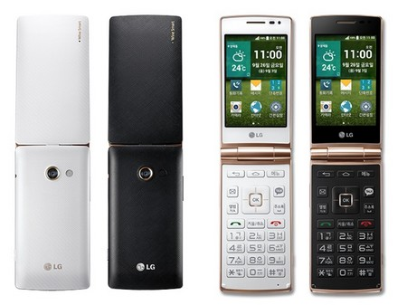

Thứ 3, 23/09/2014 | 00:00
LG trình làng smartphone có thiết kế nắp gập cổ điển
Lần đầu tiên sau 7 năm, LG lại trình làng một chiếc điện thoại nắp gấp. Tuy nhiên không phải là một chiếc điện thoại cơ bản như trước đây, sản phẩm lần này của LG là một chiếc smartphone trong hình hài của một chiếc điện thoại cổ điển.
Tháng 8 năm ngoái, Samsung khiến nhiều người bất ngờ khi trình làng chiếc smartphoneGalaxy Golden với thiết kế kiểu nắp gập vỏ sò, khiến nhiều người nhớ lại những chiếc điện thoại cổ điển ra đời cách đây nhiều năm.
Mới đây, LG cũng đã cho ra mắt một sản phẩm mới để cạnh tranh với đối thủ đồng hương, khi cũng sở hữu thiết kế cổ điển, với tên gọi Wine Smart. Đây là chiếc điện thoại nắp gập đầu tiên được LG ra mắt trong vòng 7 năm qua.
LG Wine Smart là điện thoại nắp gấp mới nhất sau 7 năm của LG
LG cho biết Wine Smart sẽ là sản phẩm nhắm đến những người dùng lớn tuổi, những người yêu thích phong cách thiết kế cổ điển và sử dụng bàn phím vật lý T9 với ít nút bấm, đơn giản hơn sử dụng màn hình cảm ứng hay bàn phím QWERTY.
Khác với chiếc smartphone Galaxy Golden nắp gập của Samsung khi sở hữu 2 màn hình cảm ứng trong và ngoài, LG Wine Smart chỉ sở hữu một màn hình cảm ứng rộng 3,5-inch với độ phân giải 480x320 ở bên trong.
Do nhắm đến đối tượng người dùng lớn tuổi, vốn chỉ sử dụng các chức năng cơ bản của smartphone, do vậy Wine Smart được trang bị một cấu hình không quá nổi bật, với bộ vi xử lý lõi tứ tốc độ 1.2GHz (chưa rõ loại vi xử lý), 1GB bộ nhớ RAM với ổ cứng lưu trữ 4GB, hỗ trợ khe cắm tẻ nhớ ngoài.
Mặt sau của máy là camera 8 megapixel, còn mặt trước là camera phụ 0.3 megapixel. Sản phẩm được trang bị thỏi pin có dung lượng 1.700mAh, có thể tháo rời. Máy hỗ trợ kết nối Wifi, Bluetooth, 3G, 4G LTE... và hoạt động trên nền tảng Android 4.4 KitKat.
Một tính năng đáng chú ý trên chiếc smartphone này đó là “Safe Keeper”, sẽ tự động gửi thông tin như địa điểm hiện tại của chiếc smartphone đến một người dùng khác đã được thiết lập từ trước nếu chiếc smartphone này không được sử dụng trong một khoảng thời gian. Tính năng này thực sự hữu dụng trong trường hợp người già đang sống một mình và gặp phải sự cố hoặc tai nạn nào đó.

Sản phẩm hướng đến đối tượng người dùng cao tuổi, với những tính năng thiết kế riêng cho người già
Sản phẩm sẽ được bán ra tại thị trường Hàn Quốc từ ngày 26/9 tới đây, với mức giá chưa được tiết lộ. Hiện chưa rõ LG có dự định mang chiếc smartphone này đến các thị trường khác bên ngoài Hàn Quốc hay không.